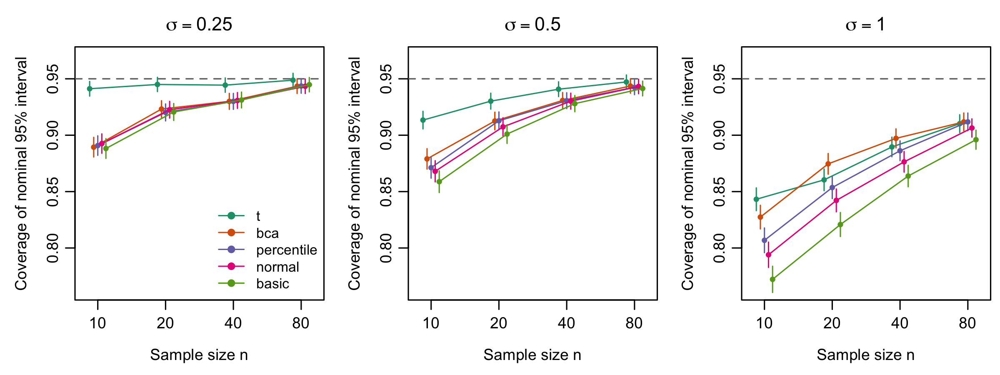
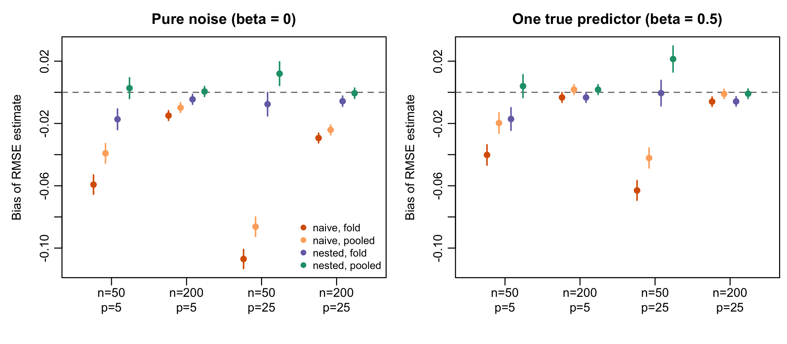

Reproducible resampling, simulation and model-evaluation methods for R, packaged as a research compendium.
The repository contains two things:
- An R package of rigorously tested implementations of methods that underpin credible applied statistics. These are bootstrap confidence intervals, permutation tests, effect sizes with exact intervals, a framework for simulation studies that reports Monte Carlo error, and honest model evaluation with nested cross-validation and calibration metrics. It depends on base R only.
-
A research compendium (
analysis/) that uses the package to run two pre-specified simulation studies, and a paper generated from their results.make analysisregenerates every number, table and figure from scratch.
Documentation website: https://satvikpraveen.github.io/R-Data-Science-Compendium/
Installation
# install.packages("remotes")
remotes::install_github("SatvikPraveen/R-Data-Science-Compendium", build_vignettes = TRUE)Requires R ≥ 4.1. The package imports only base packages (stats, utils, parallel).
Example
library(RDataScienceCompendium)
# BCa bootstrap interval for a ratio of means
ratio <- function(d) mean(d$mpg[d$am == 0]) / mean(d$mpg[d$am == 1])
boot_ci(mtcars, ratio, R = 1999, type = "bca", seed = 1)
# Permutation test (exact when feasible, otherwise Phipson-Smyth p-value)
perm_test(mtcars$mpg[mtcars$am == 1], mtcars$mpg[mtcars$am == 0], seed = 1)
# Effect size with an exact noncentral-t interval
hedges_g(mtcars$mpg[mtcars$am == 1], mtcars$mpg[mtcars$am == 0])
# A simulation study with Monte Carlo standard errors
res <- run_simulation(
generate = function(n) rexp(n),
analyse = function(x) {
ci <- t.test(x)$conf.int
c(estimate = mean(x), lower = ci[1], upper = ci[2])
},
n_sim = 2000, scenarios = data.frame(n = c(10, 40)), seed = 42
)
sim_performance(res, true = 1)
# Nested cross-validation versus the optimistic "naive" estimate
candidates <- list(
wt = function(d) lm(mpg ~ wt, data = d),
wt_hp = function(d) lm(mpg ~ wt + hp, data = d),
all = function(d) lm(mpg ~ ., data = d)
)
nested_cv(mtcars, candidates, outcome = "mpg", seed = 1)What is in the package
| Area | Functions | Validated against |
|---|---|---|
| Bootstrap |
boot_ci() (percentile, basic, normal, BCa), jackknife_influence()
|
Replicates and all four intervals identical to boot::boot.ci(); empirical coverage |
| Permutation tests |
perm_test() (two-sample, one-sample, paired; exact or Monte Carlo) |
Hand-enumerated exact p-values; type I error control; exact vs Monte Carlo agreement |
| Effect sizes |
cohens_d(), hedges_g(), hedges_correction()
|
Agreement with t.test(); exact inversion of the noncentral-t CDF; unbiasedness of g; nominal coverage |
| Simulation studies |
run_simulation(), sim_performance(), sim_n_required(), rng_streams()
|
Hand-computed Morris et al. (2019) formulas; bit-identical sequential and parallel results |
| Resampling designs |
make_folds() (random, stratified, grouped) |
Balance and group-integrity properties |
| Model evaluation |
cross_validate(), nested_cv()
|
LOOCV against the closed-form PRESS identity; removal of selection bias |
| Metrics |
auc(), auc_ci() (DeLong), brier_score(), log_loss(), calibration(), rmse(), mae(), r_squared()
|
DeLong SE against a brute-force implementation; AUC against the Mann–Whitney statistic |
| Known-truth data |
simulate_linear(), simulate_logistic(), ar1_cor()
|
Recovery of generating parameters |
Design principles:
-
Reproducible randomness. Every stochastic function takes a
seedand restores the caller’s RNG state. Simulation replicates get independent L’Ecuyer-CMRG streams, so results do not depend on the number of parallel workers. - Honest uncertainty. Monte Carlo p-values are never zero, and simulation summaries always come with Monte Carlo standard errors. Documented caveats are stated where estimators are known to be biased, such as the naive CV standard error.
- Validated, not just tested. Each method is checked against an independent reference: a reference implementation, a closed-form identity, or a simulation property such as coverage, unbiasedness or type I error.
-
Minimal dependencies. Only base R at run time;
bootandfutureare optional and used for tests and parallelism.
Test coverage is about 97%; the per-file breakdown is in the summary of each test-coverage run.
The research compendium
analysis/ holds two simulation studies designed and reported with the ADEMP framework of Morris, White and Crowther (2019):
Study 1: Do bootstrap intervals rescue small, skewed samples? Five nominal 95% intervals for a log-normal mean were compared: , percentile, basic, normal and BCa, with 12 scenarios × 5,000 replicates and a coverage MCSE of at most 0.6 points.
- For mild and moderate skew, the plain interval out-covered every bootstrap interval at every . At and , covered 94.1% while all bootstrap intervals covered under 90%.
- With strong skew, every method under-covered (77–84% at ). BCa was the best bootstrap method and matched or beat from .
- The basic interval was the worst whenever the skew was not mild.

Study 2: How optimistic is cross-validation after model selection? The true test-set RMSE of a “select by CV, then refit” procedure was compared with the naive CV estimate (the best candidate’s CV score) and with nested CV. Each estimate was computed both by averaging per-fold RMSEs and from the pooled out-of-fold predictions. There were 8 scenarios × 1,000 replicates.
- Naive CV understated the RMSE by up to 0.107, with small and many candidates.
- A second, less familiar bias turned up: averaging per-fold RMSEs made even nested CV optimistic, by up to 0.017 (Jensen’s inequality). This finding led to
cross_validate()andnested_cv()also reporting pooled estimates. - With pooling, nested CV was unbiased within 2 MCSE in 6 of 8 scenarios. In the other two it was slightly conservative (+0.021 at most), as expected from training on 80% of the data.

The full write-up, with tables and figures, is analysis/paper/paper.Rmd. The rendered, self-contained version is analysis/paper/paper.html. Summarised results and provenance (seed, replicates, R version, platform, run time) are in analysis/results/.
Reproducing the results
git clone https://github.com/SatvikPraveen/R-Data-Science-Compendium.git
cd R-Data-Science-Compendium
Rscript setup.R # install dependencies
make analysis # install the package, run both studies, render the paperBoth studies together take about 10 minutes on 8 cores. Set RDSC_WORKERS=1 for a sequential run; the results are identical either way. For a pinned environment, use the Docker image:
renv.lock records the exact package versions used to produce the committed results.
Repository layout
See PROJECT_STRUCTURE.md. In short: R/, man/, tests/ and vignettes/ form the package; analysis/ is the compendium; modules/ and shiny-apps/ hold the earlier stand-alone tutorial scripts, case studies and Shiny demos. Those are kept for learning purposes but are not part of the tested package.
Development
make test # testthat suite
make lint # lintr (must be clean)
make check # R CMD check --as-cran
make site # pkgdown websiteCI runs R CMD check on Linux, macOS and Windows for R 4.1, oldrel, release and devel. See CONTRIBUTING.md for the validation standards expected of new methods.
Citation
citation("RDataScienceCompendium")or use the “Cite this repository” button on GitHub, which reads CITATION.cff.
Key references
- Davison, A. C. and Hinkley, D. V. (1997). Bootstrap Methods and Their Application. Cambridge University Press.
- DeLong, E. R., DeLong, D. M. and Clarke-Pearson, D. L. (1988). Comparing the areas under two or more correlated ROC curves. Biometrics, 44(3), 837–845.
- Efron, B. (1987). Better bootstrap confidence intervals. JASA, 82(397), 171–185.
- Marwick, B., Boettiger, C. and Mullen, L. (2018). Packaging data analytical work reproducibly using R (and friends). The American Statistician, 72(1), 80–88.
- Morris, T. P., White, I. R. and Crowther, M. J. (2019). Using simulation studies to evaluate statistical methods. Statistics in Medicine, 38(11), 2074–2102.
- Phipson, B. and Smyth, G. K. (2010). Permutation p-values should never be zero. SAGMB, 9(1), Article 39.
- Varma, S. and Simon, R. (2006). Bias in error estimation when using cross-validation for model selection. BMC Bioinformatics, 7, 91.
License
MIT © Satvik Praveen. See LICENSE.md.